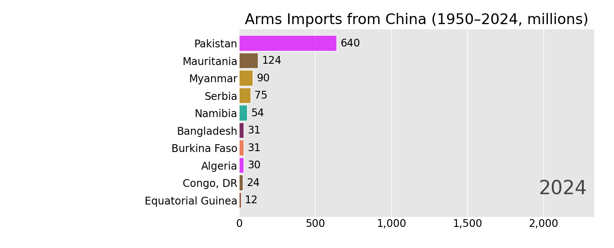
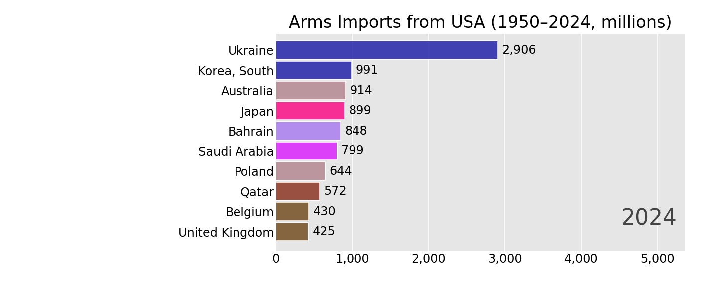

Arms imports from China
Where Chinese arms went, from a handful of Cold War partners to a broad modern client base across Asia and Africa.
Watch the race
Arms imports from the United States
The reach of U.S. arms exports across the postwar decades, and how its leading recipients shifted with each era.
Watch the race